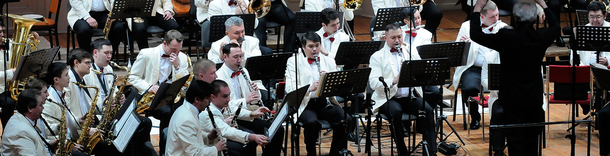
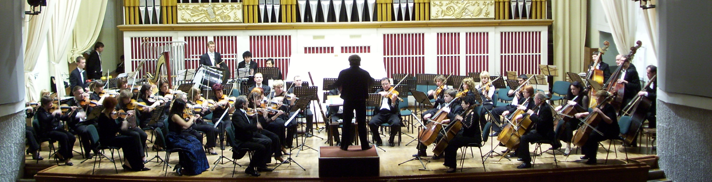
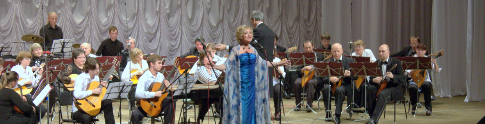
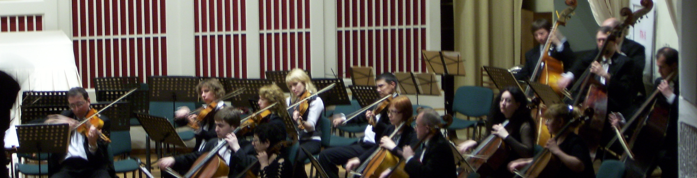
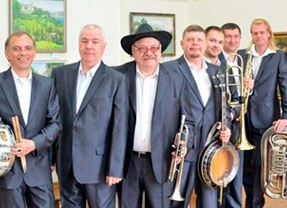
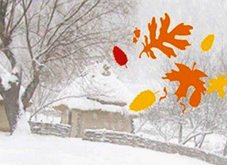

-  27 сентября, 18:00 Государственный концертный зал им. А. М. Каца Песня, ставшая судьбой К юбилею Александры Пахмутовой Михаил Луконин Лауреат международных конкурсов, баритон (Санкт-Петербург) Концертный Духовой Оркестр Худ. руководитель и главный дирижер — заслуженный артист России Марк Абрамов.
-  28 сентября, 19:00 Государственный концертный зал им. А. М. Каца Песня, ставшая судьбой К юбилею Александры Пахмутовой Михаил Луконин Лауреат международных конкурсов, баритон (Санкт-Петербург) Концертный Духовой Оркестр Худ. руководитель и главный дирижер — заслуженный артист России Марк Абрамов.
-  29 сентября, 20:00 Государственный концертный зал им. А. М. Каца Песня, ставшая судьбой К юбилею Александры Пахмутовой Михаил Луконин Лауреат международных конкурсов, баритон (Санкт-Петербург) Концертный Духовой Оркестр Худ. руководитель и главный дирижер — заслуженный артист России Марк Абрамов.
-  30 сентября, 18:00 Государственный концертный зал им. А. М. Каца Песня, ставшая судьбой К юбилею Александры Пахмутовой Михаил Луконин Лауреат международных конкурсов, баритон (Санкт-Петербург) Концертный Духовой Оркестр Худ. руководитель и главный дирижер — заслуженный артист России Марк Абрамов.
Ближайшие концерты
18+
аренда
9 июля в 18:30
Семейный органный вечер
Музыка больших джаз-оркестров, рок-н-ролл и буги-вуги.
Биг-бэнд Владимира Толкачёва
Художественный руководитель и дирижер — Владимир Толкачев.
Концертный зал Дома учёных СО РАН
1200–1500 р.
Купить билет
6+
9 июля в 18:30
Летние серенады
О. Штраус, П. Сарасате, Фролов-Альмейда, А. Пьяццолла, Р. Фукс, Дж. Керн.
Камерный оркестр
Юлия Рубина, скрипка
Фёдор Кабельский, скрипка
Семён Промое, скрипка
Евгений Клёнов, скрипка
Олег Багинский, альт
Дирижер — Алим Шахмаметьев
Камерный зал филармонии
1200–1500 р.
Купить билет

18+
9 июля в 18:30
Для тех, кто отдыхает
Джаз-оркестр «Сибирский диксиленд»
Художественный руководитель — Сергей Гершенович
Наталия Васеева, джаз-вокал.
Государственный концертный зал имени А. М. Каца
1200–1500 р.
Купить билет

6+
9 июля в 18:30
Песня, ставшая судьбой… » К юбилею А. Пахмутовой
XVI Фестиваль русской музыки «Покровская осень»
Камерный хор
Русский Академический Оркестр
Дирижер — Рустам Дильмухаметов
Государственный концертный зал имени А. М. Каца
1200–1500 р.
Купить билет